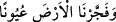

Her iki âlemde bilinecek ne varsa
Onun her şeye şâmil olan ilminden gizli değildir.
Âyette yer alan “adeden” kelimesi dilbilgisi kurallarına göre temyiz olur. Bu tıpkı “
” yâni; “Biz yeryüzünü kaynak kaynak fışkırttık.” (el-Kamer, 54/12)
âyet-i kerîmesindeki “uyunen” kelimesine benzer.
İfâdenin aslı şöyledir; Allah her şeyin sayısını saymıştır. Bu ifâdeden çıkan sonuç
Allah Teâlâ’nın eşya hakkındaki bilgisinin külli ve toptan bir bilgi olmadığını, aksine
cüz’î ve ayrıntılı bir bilgi olduğunu beyân etmektir. Çünkü saymak anlamına gelen
“ihsâ” masdarı ile bazen icmâlî yâni toptan bir bilgi kasdedilir. Nitekim “Allah’ın
nimetini sayacak olsanız sayamazsınız.” (İbrahim, 14/34) âyet-i kerîmesinde durum
böyledir. Yâni siz bırakın ayrıntıya girmeyi topluca bile Allah’ın nimetlerini
sayamazsınız demektir. Burada nimetin topluca sayılması anlamı “ihsâ” kökünden
kaynaklanıyor. Çünkü hesap yapan bir kişi belli bir sayıya, meselâ on, yüz, bin gibi
muayyen bir rakama ulaştığında o sayıyı unutmasın diye yanına, ihsâ kökünden türeyen
“hasâ: çakıltaşı” koymaktadır. Böylece o on, yüz, bin gibi belirlemiş olduğu muayyen
rakamı bu çakıl taşıyla muhâfaza etmekte ve böylece belirlediği rakamın üstüne başka
rakamlar getirerek hesabını tamamlamaktadır. İşte bu “ihsâ” kökünden anlıyoruz ki
İbrahim Sûresi’ndeki bilgi ayrıntılı değil toplu bilgidir.
Bu âyet-i kerîme ile “mâdumun «şey» olmadığına” delil getiriliyor. Çünkü mâdum
yâni olmayan, eğer şey (nesne) olsaydı o zaman eşya sonsuz olurdu. Cenâb-ı Hakk’ın
eşyânın sayısını saymış olması, onun sayısının sonsuz olmamasını gerektiriyor. Çünkü
sayı ancak sonu olan nesnelerde olur. Şu hâlde eğer biz “mâdum şey’dir” dersek bu
takdirde sonlu ile sonsuzu bir araya getirmiş oluruz, bu da imkânsızdır. Şu hâlde
yukarda işâret edilen tenâkuz ve zıtlığın ortadan kaldırılması için, “mâdumun şey
olmadığını” kesin bir biçimde söylememiz gerekiyor. Nitekim İbn Şeyh’in
Havâşî’sinde bu şekilde kayıtlıdır.[146]
[144]. Buhârî, Teyemmüm, 1.
[145]. Tirmizî, Tefsîr, 15.
[146]. Lütuf ve ihsân sâhibi Cenâb-ı Hakk’ın yardımıyla Cin sûresinin tefsiri, 7
Zilkâde 1116 Salı günü ikindi vakti bitti.